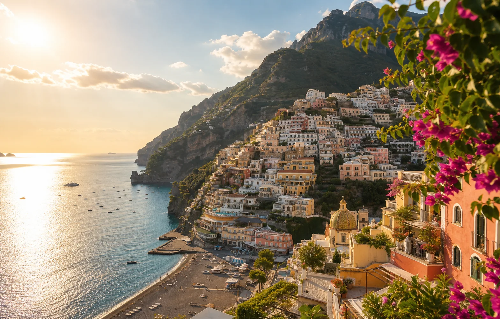
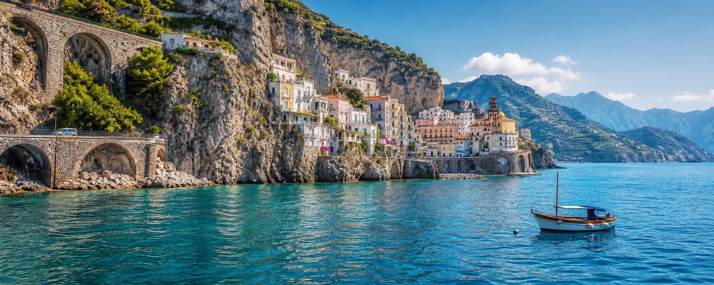
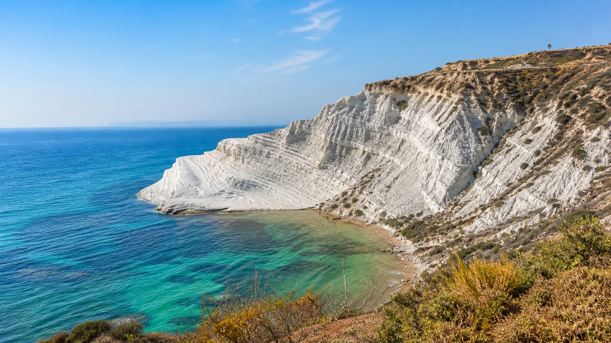
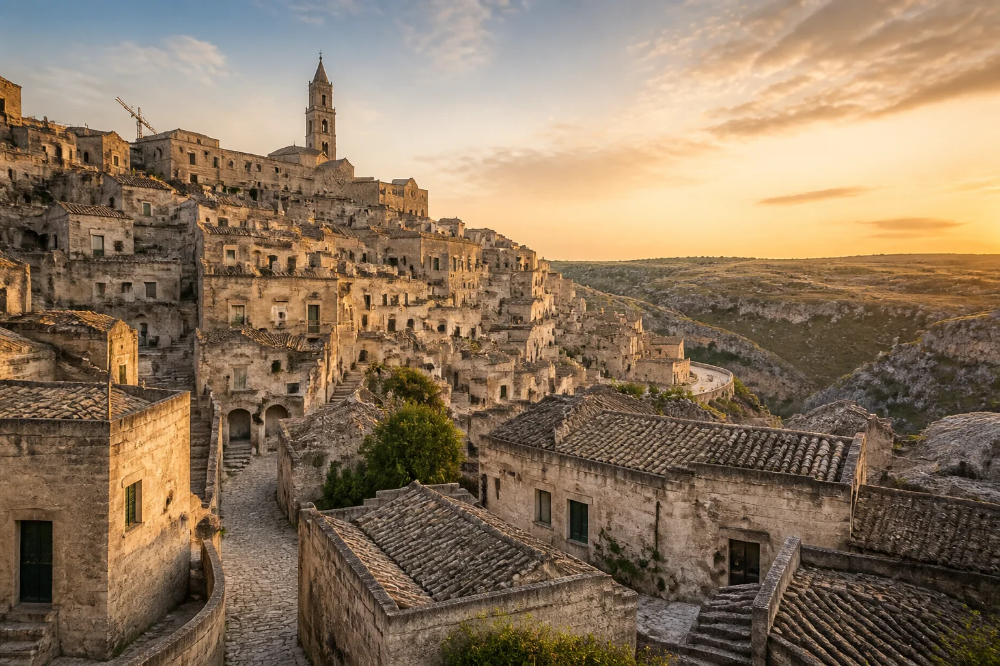

目前已知總支出
-- 含交通、住宿、門票及寄放Sicilia · Campania · Basilicata · Puglia
南義大利
公路自駕之旅
2026.08.05 - 08.17 · 13 日 · 4 位旅人 · 臺北出發
PALERMOTAORMINAAMALFIMATERANAPOLI
距離出發
--
天
去程 TK25 · 08/05 21:45 桃園 T2

已付款
-- --待付款
-- --每人目前費用
-- --已購門票
6 項 共 24 張入場票內容手冊
29 景點 另有 8 集影片腳本Itinerary
行程規劃
先瀏覽每日主題，再切換下方完整時程；時間、餐廳、拍攝提示與已安排票券均依原行程表呈現。
Full Schedule
完整逐時行程
Accommodation
住宿規劃
8 間住宿涵蓋西西里、龐貝、馬泰拉、普利亞與拿坡里；狀態清楚標示已付款及待付款項目。
Flights
交通規劃 · 航班
土耳其航空 · 訂位代號 RUGAGM · 每人 30kg 行李
Road & Sea
租車與船班

穿越海岸與石窟古城，從阿瑪菲的藍一路抵達拿坡里的黃昏。
Admission
門票訂購
目前完成 6 項預訂；龐貝古城、聖塞維諾小堂與那不勒斯地下城皆已加入。
Places Guide
景點介紹
共 29 處完整導覽內容。以地區篩選景點，再於右側閱讀歷史脈絡、看點與參訪資訊。


Film Journal
影片拍攝腳本規劃
8 集完整腳本含旁白、現場互動、鏡頭與後製備註；選擇集數後可直接閱讀全篇。
Budget Status
經費支出狀態
--
已付款
已付款 --
待付款 --
尚未估價：油資、停車、高速公路費、保險、網路、餐飲與額外消費。
Payment Queue
待付款明細
Per Traveler
個人平均支出
以 4 位旅人均分目前已知支出計算；尚未估價項目不包含在合計中。
每人目前已知預算
--
13 日平均每日 --
尚待支付平均每人 --
Before Departure
待確認與提醒
依現有訂單與規劃資料整理，出發前可依序完成。